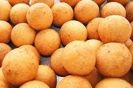

Mezcla seca: En un bol grande, integra la maicena, el almidón de yuca, el azúcar, la pizca de sal y el bicarbonato.
2. Incorporación del queso: Añade el queso rallado muy finamente y mezcla con las manos hasta que se distribuya de forma uniforme.
3. Hidratación: Agrega el huevo y comienza a verter la leche (o agua) muy poco a poco mientras amasas.
4. Amasado: Sigue trabajando la masa hasta que sea suave, manejable y no se pegue a las manos (textura similar a la plastilina).
5. Formado: Toma pequeñas porciones y dales forma de bola. Importante: No aprietes demasiado la masa; las bolas deben quedar suaves para que no exploten.
6. Fritura: Calienta abundante aceite a fuego medio. Prueba la temperatura lanzando una bolita pequeña: debe subir a la superficie en 10-12 segundos.
7. Cocción: Sumerge los buñuelos. Ellos deben rotar solos en el aceite. Retíralos cuando estén dorados uniformemente (tarda unos 10-12 minutos).
8. Escurrido: Ponlos sobre papel absorbente para eliminar el exceso de grasa.